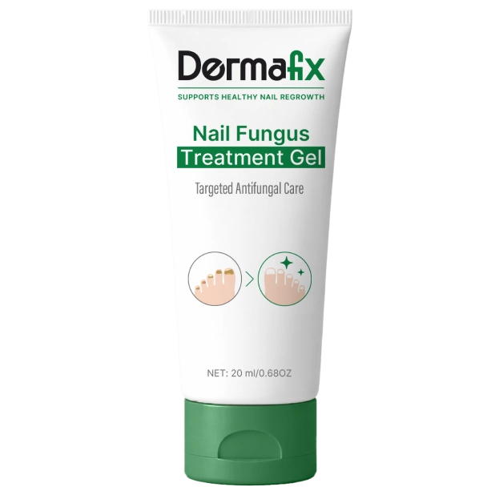

Dermafix Gel – wirkt da, wo der Nagelpilz sitzt
Ölbasiert, zieht durch die Nagelplatte bis zum Pilz. Einmal täglich auftragen – ohne Tabletten, ohne Rezept.
- Kostenloser Versand
- 90 Tage Geld-zurück-Garantie
- Sicher bezahlen · kein Abo
Was ist das Dermafix Gel?
Das Dermafix Gel ist ein ölbasiertes Mittel gegen Nagelpilz für die tägliche Anwendung zu Hause. Es kombiniert Teebaumöl, kolloidales Silber und Bacillus-Ferment gegen den Pilz mit einer Ölbasis aus Emuöl und Squalan, die die Wirkstoffe dorthin bringt, wo sie gebraucht werden: unter den Nagel.
Gleichzeitig pflegen Vitamin E und Olivenöl Nagel und Haut. Eine Tube reicht einen Monat. Gedacht ist es für alle, bei denen Lack und Creme nichts gebracht haben – und die im Sommer wieder barfuß laufen möchten.
Zieht in den Nagel ein
Die ölbasierte Formel dringt durch die Nagelplatte – statt wie Lack auf der Oberfläche liegen zu bleiben.
Wirkt und pflegt zugleich
Teebaumöl, Silber und Ferment gegen den Pilz, Emuöl, Squalan, Vitamin E und Olivenöl für Transport und Pflege.
Ohne Tabletten und Rezept
Kein Arzttermin, keine Tabletten mit Wechselwirkungen – einfach einmal täglich auftragen.
Dermafix Gel Wirkung: warum Lack nicht reicht
Wer Nagelpilz hat, hat meist schon ein, zwei Mittel aus der Drogerie hinter sich – monatelang aufgetragen, ohne dass sich etwas getan hat. Das liegt nicht an der Geduld, sondern an der Stelle, an der diese Mittel wirken.
Mehrfach-Formel gegen den Pilz
Teebaumöl, kolloidales Silber und Bacillus-Ferment greifen den Pilz gemeinsam an und verhindern, dass er sich weiter ausbreitet.
Pflegt, während es wirkt
Vitamin E, Olivenöl und Squalan versorgen Nagel und Haut mit Feuchtigkeit und unterstützen die natürliche Regeneration.
Sanft für jeden Tag
Mild genug für die tägliche Anwendung – ohne Reizung und ohne den stechenden Geruch chemischer Mittel.
Dermafix Gel Inhaltsstoffe: 7 natürliche Wirkstoffe
Jeder Inhaltsstoff hat eine klare Aufgabe: Drei bekämpfen den Pilz, Emuöl und Squalan bringen sie in den Nagel, Vitamin E und Olivenöl pflegen Nagel und Haut.
Die Formel
Dermafix Gel Erfahrungen: die Ergebnisse der Anwender
440 Kunden haben Dermafix 120 Tage lang angewendet – und 94 Prozent von ihnen sind ihren Nagelpilz los. Klarere, gesünder aussehende Nägel sehen 91 Prozent der Anwender schon nach vier Wochen.
Vorher und nach drei Wochen täglicher Anwendung.
So entwickelt sich der Nagel – laut Hersteller
Der Pilz wird angegriffen
Die Wirkstoffe ziehen unter den Nagel ein und greifen die Pilzzellen an, an der Oberfläche wird die Ausbreitung gestoppt.
Sichtbare Verbesserung
Die Verfärbung beginnt zu verblassen, die Verdickung geht zurück, und an der Basis wächst klarer, gesunder Nagel nach.
Der gesunde Nagel wächst heraus
Der klare Nagel schiebt sich nach vorn und ersetzt nach und nach den befallenen Teil – heller, glatter und kräftiger.
Dermafix Gel richtig anwenden
Eine Minute am Tag – zum Beispiel abends vor dem Schlafengehen.
Nagel vorbereiten
Füße waschen und gut abtrocknen. Das Gel wirkt am besten auf einem sauberen, trockenen Nagel.
Auftragen und einmassieren
Dermafix auf den ganzen Nagel geben – auch an die Ränder und, wenn möglich, unter die Spitze. 30 bis 60 Sekunden sanft einmassieren, nicht abwaschen.
Jeden Tag dranbleiben
Einmal täglich, mindestens drei Monate lang – bis der gesunde Nagel vollständig nachgewachsen ist.
Dermafix Gel Offiziell Kaufen: direkt im Original-Shop
Dermafix gibt es weder in der Apotheke noch bei dm, Rossmann oder Amazon – sondern nur im Original-Vertrieb. Nur dort bekommen Sie das Original, den aktuellen Rabatt, den kostenlosen Versand und die 90-Tage-Geld-zurück-Garantie.
So läuft die Bestellung
Paket wählen
Klick auf „Jetzt bestellen“ und 1, 2 oder 3 Tuben wählen – im 3er-Paket mit bis zu 60 Prozent Rabatt.
Sicher bezahlen
Lieferadresse eingeben und an der sicheren Kasse die Zahlungsart wählen. Einmalkauf, kein Abo.
Lieferung nach Hause
Das Gel kommt kostenlos zu Ihnen nach Hause. Ab Lieferung gilt die 90-Tage-Geld-zurück-Garantie.
Ist das Dermafix Gel seriös?
Wer online gegen Nagelpilz bestellt, will wissen, mit wem er es zu tun hat. Vier Punkte, die für Dermafix sprechen:
Dermafix Gel Bewertungen von Kunden
Über 30.000 Anwender setzen auf Dermafix. So beschreiben Kunden ihre Behandlung:
„Zwei Sommer lang habe ich meine Zehen versteckt. Mit Dermafix habe ich nach wenigen Wochen täglicher Anwendung endlich einen sichtbaren Unterschied gesehen.“
„Mein Podologe hat mir geraten, das auszuprobieren, statt gleich zu verschreibungspflichtigen Tabletten zu greifen – meine Nägel sehen fast wieder normal aus.“
„Vorher war mir sogar die Pediküre peinlich. Jetzt trage ich Sandalen, ohne mich wegen meiner Fußnägel unwohl zu fühlen.“
„Die Verfärbung, mit der ich mich seit Jahren herumgeschlagen habe, ging nach etwa einem Monat deutlich zurück – ich habe das Gel jeden Abend vor dem Schlafengehen aufgetragen.“
„Ich habe Geld für so viele Drogerie-Mittel verschwendet, die nichts gebracht haben. Dieses Gel ist tatsächlich in den Nagel eingezogen und hat von innen gewirkt.“
„Den Nagelpilz hatte ich mir in der Umkleide im Fitnessstudio eingefangen – Dermafix hat ihn schneller beseitigt, als ich für möglich gehalten hätte.“
Fragen und Antworten zum Dermafix Gel
Die Antworten auf die Fragen, die vor der Bestellung am häufigsten gestellt werden.
Wie wende ich Dermafix an?
Einmal täglich auf den sauberen, trockenen Nagel auftragen – auch an den Rändern und, wenn möglich, unter der Nagelspitze. 30 bis 60 Sekunden sanft einmassieren und nicht abwaschen.
Wann sehe ich erste Ergebnisse?
Viele Anwender sehen innerhalb weniger Wochen, dass sich die Verfärbung zurückbildet. Der deutlichste Fortschritt zeigt sich nach 8 bis 12 Wochen, wenn der gesunde Nagel nachgewachsen ist.
Wie lange sollte ich Dermafix anwenden?
Mindestens drei Monate, täglich – so lange braucht ein neuer, klarer Nagel, um nachzuwachsen. Deshalb wählen die meisten Kunden gleich das 3er-Paket.
Warum wirkt ein Gel besser als Lack?
Der Pilz sitzt nicht auf, sondern unter dem Nagel. Lacke bleiben auf der harten Oberfläche liegen. Dermafix ist ölbasiert: Emuöl und Squalan tragen die Wirkstoffe durch die Nagelplatte bis dorthin, wo der Pilz sitzt.
Brauche ich ein Rezept?
Nein. Dermafix bestellen Sie ohne Rezept und ohne Arzttermin – mit einem Klick auf „Jetzt bestellen“.
Wo kann ich Dermafix Offiziell Kaufen?
Dermafix gibt es nur im Original-Vertrieb – mit kostenlosem Versand und 90-Tage-Geld-zurück-Garantie. Über „Jetzt bestellen“ kommen Sie direkt dorthin.
Was kostet Dermafix?
Die aktuellen Preise sehen Sie mit einem Klick auf „Jetzt bestellen“. Im 3er-Paket sparen Sie derzeit bis zu 60 Prozent.
Ist das ein Abo?
Nein. Jede Bestellung ist ein Einmalkauf – ohne Abo, ohne Folgekosten.
Wie funktioniert die Geld-zurück-Garantie?
Sie haben 90 Tage Zeit, Dermafix in Ruhe zu testen. Sind Sie nicht zufrieden, bekommen Sie Ihr Geld zurück.
Hat Dermafix Nebenwirkungen?
Dermafix ist mit natürlichen Inhaltsstoffen formuliert und für die tägliche Anwendung gemacht. Wer auf Teebaumöl empfindlich reagiert, testet das Gel zuerst an einer kleinen Stelle. Nur äußerlich anwenden und nicht auf verletzte Haut auftragen.
Ist Dermafix vegan?
Nein. Dermafix enthält Emuöl – ein tierisches Öl, das die Wirkstoffe besonders gut in den Nagel trägt.
Kann ich Dermafix mit anderen Mitteln kombinieren?
Ja, viele Anwender nutzen Dermafix zusätzlich zu ihrer gewohnten Fußpflege. Wer verschreibungspflichtige Mittel gegen Pilz nimmt, spricht die Kombination kurz mit dem Arzt ab.
Wie bewahre ich die Tube auf?
Bei Zimmertemperatur, fern von direkter Sonne und Hitze, gut verschlossen und außerhalb der Reichweite von Kindern. Nach dem Öffnen innerhalb von 12 Monaten verbrauchen.
Bereit für klare, gesunde Nägel?
Einmal täglich auftragen, drei Monate dranbleiben – und mit 90 Tagen Geld-zurück-Garantie ohne Risiko.
Dermafix bestellen